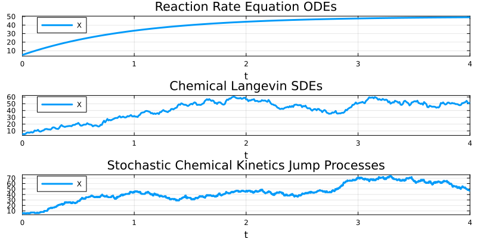
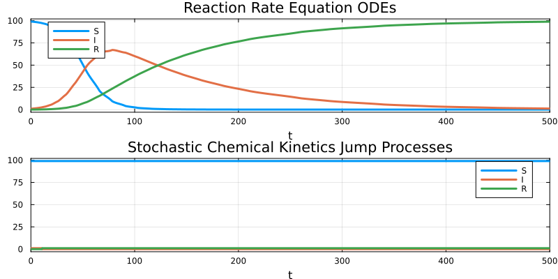
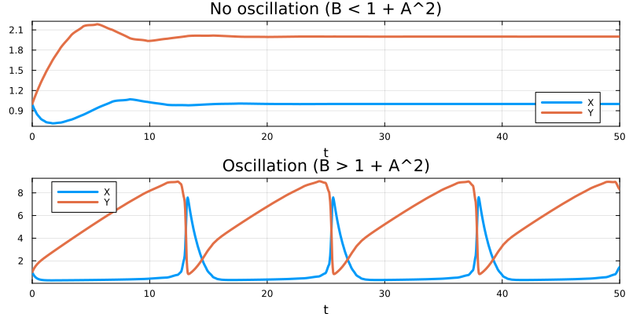

using Catalyst, DifferentialEquations, Plots
rs = @reaction_network begin
c1, X --> 2X
c2, X --> 0
c3, 0 --> X
end
p = (:c1 => 1.0, :c2 => 2.0, :c3 => 50.)
tspan = (0.,4.)
u0 = [:X => 5.]
# solve ODEs
oprob = ODEProblem(rs, u0, tspan, p)
osol = solve(oprob, Tsit5())
# solve for Steady states
ssprob = SteadyStateProblem(rs, u0, p)
sssol = solve(ssprob, SSRootfind())
# solve SDEs
sprob = SDEProblem(rs, u0, tspan, p)
ssol = solve(sprob, EM(), dt=.01)
# solve JumpProblem
u0 = [:X => 5]
dprob = DiscreteProblem(rs, u0, tspan, p)
jprob = JumpProblem(rs, dprob, Direct())
jsol = solve(jprob, SSAStepper())
plot(plot(osol; title = "Reaction Rate Equation ODEs"),
plot(ssol; title = "Chemical Langevin SDEs"),
plot(jsol; title = "Stochastic Chemical Kinetics Jump Processes");
layout = (3, 1))
using Catalyst, DifferentialEquations, Plots
rs = @reaction_network begin
c1, S + E --> SE
c2, SE --> S + E
c3, SE --> P + E
end
p = (:c1 => 0.00166, :c2 => 0.0001, :c3 => 0.1)
tspan = (0., 100.)
u0 = [:S => 301., :E => 100., :SE => 0., :P => 0.]
# solve ODEs
oprob = ODEProblem(rs, u0, tspan, p)
osol = solve(oprob, Tsit5())
# solve JumpProblem
u0 = [:S => 301, :E => 100, :SE => 0, :P => 0]
dprob = DiscreteProblem(rs, u0, tspan, p)
jprob = JumpProblem(rs, dprob, Direct())
jsol = solve(jprob, SSAStepper())
plot(plot(osol; title = "Reaction Rate Equation ODEs"),
plot(jsol; title = "Stochastic Chemical Kinetics Jump Processes");
layout = (2, 1))

using Catalyst, DifferentialEquations, Plots
rs = @reaction_network begin
α, S + I --> 2I
β, I --> R
end
p = [:α => .1/100, :β => .01]
tspan = (0.0,500.0)
u0 = [:S => 99.0, :I => 1.0, :R => 0.0]
# Solve ODEs.
oprob = ODEProblem(rs, u0, tspan, p)
osol = solve(oprob)
# Solve Jumps.
dprob = DiscreteProblem(rs, u0, tspan, p)
jprob = JumpProblem(rs, dprob, Direct())
jsol = solve(jprob, SSAStepper())
plot(plot(osol; title = "Reaction Rate Equation ODEs"),
plot(jsol; title = "Stochastic Chemical Kinetics Jump Processes");
layout = (2, 1))
using Catalyst, DifferentialEquations, Plots
rs = @reaction_network begin
@parameters A B
A, ∅ --> X
1, 2X + Y --> 3X
B, X --> Y
1, X --> ∅
end
tspan = (0.0,50.0)
u0 = [:X => 1.0, :Y => 1.0]
# Non-oscillation parameter set
oprob1 = ODEProblem(rs, u0, tspan, [:A => 1.0, :B => 1.0])
osol1 = solve(oprob1)
# Oscillation parameter set
oprob2 = ODEProblem(rs, u0, tspan, [:A => 1.0, :B => 3.0])
osol2 = solve(oprob2)
plot(plot(osol1; title = "No oscillation (B < 1 + A^2)"),
plot(osol2; title = "Oscillation (B > 1 + A^2)");
layout = (2, 1))
